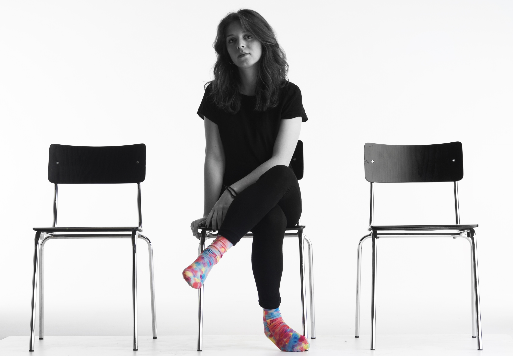

About

I am a Service Design master student based in Copenhagen.
I am a Service Design master student based in Copenhagen.
.jpg)
"Wonder Waste" analyzes how design could be
a mean for the recovery of materials,
a precious operation for the protection
of the planet that goes against mass production
and the waste of substances that are still valid.
It is a question that concerns both global and local
point of view, both in the public and private sphere.
The degree project aims to realize a product using
the organic domestic waste, in particular the used
cooking oil, as a starting point. The research, aimed
to create a tool that everyone can use at home, has the
purpose to make more aware and sensitise the final user
on what is produced, consumed and, above all, on the
precious leftover scraps in the daily life.
"Wonder waste" shows the possibility of re-storing
the residues of oil used in kitchens, transforming it
from something dirty, to something that is part of our
personal hygiene. This is about what goes beyond “recycling”,
that is “upcycling”. A cycle that starts from people and
from what they consume and returns to them in another form.
The project creates the basis for implementing the reuse of
waste oil while remaining within the home's wall, an alternative
to the current solutions on the disposal of this precious resource.
.jpg)
.jpg)
.jpg)

"Bitte R" is a magazine realized in Bolzano for Bolzano.
It collects the voice of the Bolzano's citizens,
with a gentle touch (Bitte - DE) and a bitter (EN) twist: Bolzano isn't untouchable.
This a project realized during the summer semester at unibz.
Students became insiders and outsiders of a city seen as a perfect spot in South Tyrol.
→ 2016, April - September
XXI Triennale Esposizione Internazionale
Milano
Title: “Sempering. Process and pattern in architecture and design”
c/o Mudec - Via Tortona, n. 56 - 20144 Milano
→ 2018, May
Water Light Festival Bressanone
Title: “Progettare l’acqua - Wasser Designen - Designing Water”
c/o Hotel Adler - Via Ponte Aquila, n. 9 - Bressanone 39042 (BZ)